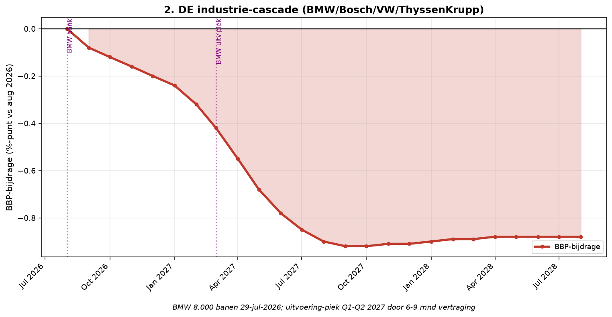

Element 2 — Duitse industrie-cascade
Breuk-element 2 van 28 in de systeemanalyse Nederland aug 2026 – aug 2028.
Door Jacobus van Merksteijn

Grafiek: Duitse industrie-cascade.
2.1 Kritische feiten
De Duitse industrie ondergaat een structurele ineenstorting die geen
conjunctuurschommeling is maar permanente productieverplaatsing naar
China, VS en Polen. Kernbedrijven met concrete ontslagen (aankondiging
2024-2026):
-----------------------------------------------------------------------
Bedrijf Aangekondigde Bron / stand van
ontslagen zaken
----------------------- ----------------------- -----------------------
BMW 8.000 banen 29 juli 2026 (Reuters,
NRC):
vrijwillige-ontslagen
programma
Bosch 22.000 banen Uitvoering 2024-2027;
Duitsland zwaartepunt
Volkswagen 35.000 banen Aankondiging
herstructurering 2024;
sluiting fabriek
Osnabrück
ThyssenKrupp Steel 11.000 banen Van 27.000 naar 16.000
in staaldivisie
2024-2028
Ford Cologne 2.900 banen 2024 aangekondigd
ZF Friedrichshafen 14.000 banen 2024-2028 plan
Continental 7.150 banen Reifen + Automotive
2024-2026
Bayer 13.500 banen Farmaceutica + Crop
Science reorganisatie
Miele 700 banen Verplaatsing productie
naar Polen
Kuka (Chinees) ~1.000 banen Robotica: personeel
reductie
KraussMaffei ~500 banen Kunststofmachines:
China-verkoop
Ledvance ~1.500 banen LED-fabrieken sluiten
in DE
STOLL ~200 banen Machinebouw verkocht
aan China
Putzmeister ~300 banen Betontechniek verkocht
aan Sany (China)
-----------------------------------------------------------------------
Direct getroffen totaal: ~114.000 banen. Multiplicator-effect
(RWI/IW/Rosalux-onderzoek, US-benchmark Hill 2020: 6,6× voor
auto-industrie, 3× voor andere industrie): ~1,95 miljoen banen indirect
over 2-4 jaar. Dat is 4,5% van DE beroepsbevolking. DE-werkloosheid
bereikt in 2028 waarschijnlijk 12% (Weimar-drempel) tegenover 6,3% in
2025.
2.2 Wat "permanent" hier betekent
De Duitse industrie komt niet terug. Fabrieken die worden gesloten of
verplaatst zijn niet binnen 5-10 jaar terug te draaien:
- BMW-fabriek in München-Milbertshofen (E-Autos) heeft investeringsafspraken met Chinese partners tot 2035
- Volkswagen Osnabrück (kleine SUV's) is verplaatst naar Wolfsburg + Shanghai --- geen terug-migratie
- Bosch-locaties in Zuid-Duitsland sluiten of gaan naar Slowakije/Polen (loonvoordeel 60%+)
- Miele verplaatst wasmachinemontage naar Polen --- investering €300 mln, niet omkeerbaar
- ThyssenKrupp Steel: modernisering naar groen staal vereist €10 mrd, financiering onmogelijk zonder overheid
- Ford Cologne: elektrische productie is Amerikaans investeringsbesluit --- als Ford NA vertrekt, komt niet terug
- Kuka/KraussMaffei/Putzmeister zijn eigendom Chinese moederbedrijven: R&D verplaatst naar China
Rotterdam-doorvoer voelde dit al: -1,7% in 2025, -0,7% Q1 2026, chemie
-7,2% Q1 2026. De -17% doorvoer die augustus 2026 zichtbaar is, wordt
richting -30% eind 2028 door voortgaande sluitingen --- dat is een
permanent BBP-verlies van 0,9% via Rotterdam alleen.
2.3 Bronnen
• Reuters 29 juli 2026: BMW schrapt 8.000 banen --- https://www.reuters.com/business/world-at-work/bmw-cut-several-thousand-jobs-under-voluntary-redundancy-programme-2026-07-29/ • NRC 29 juli 2026: BMW-ontslagen bevestigd --- https://www.nrc.nl/nieuws/2026/07/29/autofabrikant-bmw-schrapt-8-000-banen-a4933467 • AutoScout24: VW in zwaar weer, cascade DE-merken --- https://www.autoscout24.nl/informeren/autonieuws/niet-alleen-volkswagen-in-zwaar-weer-ook-dit-grote-duitse-merk-schrapt-duizenden-banen/ • BMWK feb 2026: DE-industrie output -1,9% --- https://www.bundeswirtschaftsministerium.de/Redaktion/EN/Pressemitteilungen/Wirtschaftliche-Lage/2026/20260213-the-economic-situation-in-germany-february-2026.html • Tagesschau mrt 2026: DE-export -2,3% januari 2026, sterkste daling sinds mei 2024 --- https://www.tagesschau.de/wirtschaft/konjunktur/exporte-deutschland-116.html • WeLinger 2026: DE-BBP 2023 en 2024 kromp; 2025 +0,2%; NL-export naar DE onder druk --- https://www.welingelichtekringen.nl/economie/is-duitsland-opnieuw-de-zieke-man-van-europa
2.4 Per-maand dynamiek NL-blootstelling
--------------------------------------------------------------------------
Maand BBP-bijdrage Gebeurtenis
----------------------- ----------------------- --------------------------
aug 2026 -0,08% BMW-shock 29 jul;
sentiment slaat door bij
NL-toeleveranciers
sep 2026 -0,12% Bosch NL-toelevering
waarschuwingen richting
eigen leveranciers
okt 2026 -0,16% ThyssenKrupp-cascade
aankondigingen;
Rotterdam-staal-doorvoer
daalt
nov 2026 -0,20% VW-herstructurering breidt
uit; Osnabrück-sluiting
concreet
dec 2026 -0,24% Q4-cijfers DE bevestigen
ineenstorting
jan 2027 -0,32% BMW-uitvoering start;
nieuwe golf aankondigingen
feb-mrt 2027 -0,42% / -0,55% VDL-Nedcar val (geen
opvolgorder BMW meer)
apr-jul 2027 -0,68% / -0,85% ZF/Continental-cascade
doorwerkt op
NL-elektronica
aug 2027 -0,90% Piek negatief voor NL:
hoogseizoen
automontage-druk
sep 2027 - jan 2028 -0,92% / -0,90% Plateau;
ThyssenKrupp-uitvoering
feb-aug 2028 -0,89% / -0,88% Blijvend plateau; geen
herstel binnen horizon
--------------------------------------------------------------------------
{width="6.5in" height="3.3736876640419946in"}
*DE industrie-cascade: BMW-shock aug 2026 → NL-piek Q1-Q2 2027; plateau
-0,88%*
2.5 Uitwerking: cascade naar NL 2027-2028
- VDL-Nedcar (Born): geen BMW-order meer sinds 2024; alternatieve klanten (Rivian, Lynk & Co) beperkt. Faillissement voorjaar 2027 realistisch. 4.000 banen weg.
- Tata Steel IJmuiden: €2 mrd staatssteun apr 2026, maar afhankelijk van DE-auto-vraag. Als DE-vraag verder daalt, is Tata onverkoopbaar. 9.000 banen op de tocht.
- Bosch Nederland (Boxtel, Tilburg): eigen ontslagen in cascade bij Duitse moeder. ~2.000 banen.
- DAF Trucks (Eindhoven): afhankelijk van DE-vrachtvraag. ~300 banen kwetsbaar.
- Signify (Eindhoven, LED): DE-industrie krimpt = minder LED-vraag industrieel. ~1.500 banen.
- ASML China-restricties (element 3.1): indirect via DE-halfgeleider-vraag
- Groningse gasketen: DE-industriële gasvraag daalt met sluiting fabrieken. Groningen-heropening (element 25) financieel onaantrekkelijk als DE afnemer verdwijnt.